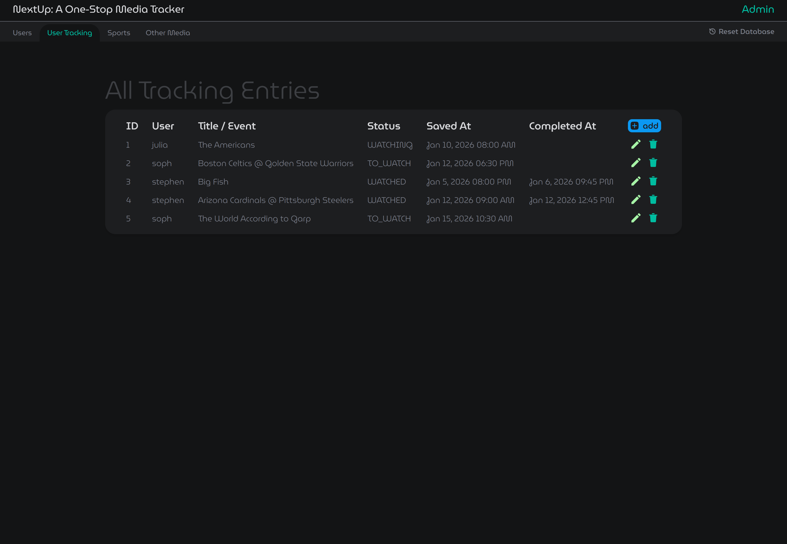
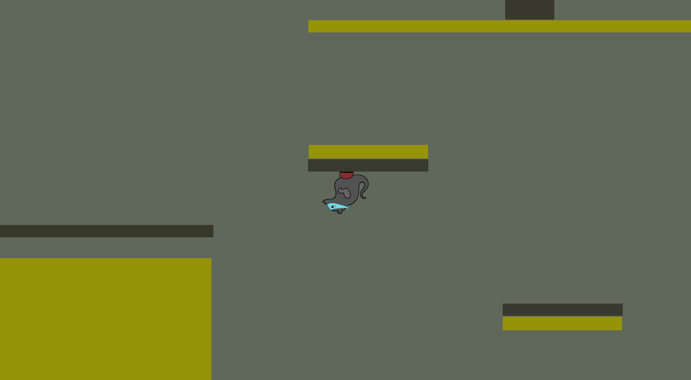
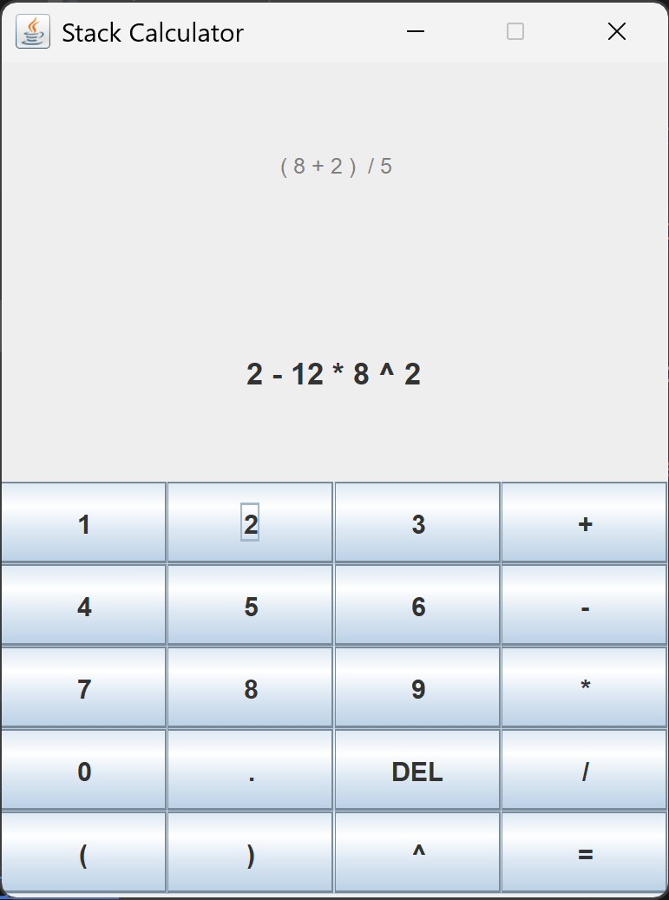

Programming Projects

Nextup: A One-Stop Media Tracker
Over the course of two months, a teammate and I developed a media tracking database, featuring a web interface and Node.js server. We implemented full CRUD functionality and wrote PL/SQL procedures to optimize database execution speed and data access, participated in sprint cycles to collaboratively evolve the product from specification to a functional web app. I learned a lot about both web deveolopment and databases over the course of this project.
View CodeRat Jam (Global Game Jam 2026)
I worked in a team of 4 over the course of 48 hours to create a fully playable 2D puzzle-platformer. None of us had made a game before and it was really cool to be able to make a playable game in such a short time with software we had never used before. I not only built an interactive 2D level within the Unity game engine, but also Learned to use Blender to create a set of six distinct animations for the player character.


Java Calculator
This calculator features both GUI and CLI interfaces as well as file I/O functionality that allows for batch processing expressions. I made a custom stack class that I then used to handle expression parsing and evaluation. The calculator first tokenizes the inputted infix expression, then converts it to a postfix expression and evaluates it.
View CodeUpcoming Projects
Budgeting App
Keeping track of your finances is incredibly important, yet most people despise budgeting. I want to build an app that gamifies budgeting to help encourage budgeting and hopefully make budgeting a positive experience. I would love to make this app connect with the user's bank to import transactions for easy expense tracking and have the app provide helpful stats about spending habits. One issue that some people have brought up is that most apps are set on a monthly cycle, which doesn't work well for those with inconsistant income. I hope to set up my app in such a way that it works well for people regardless of income consistency.